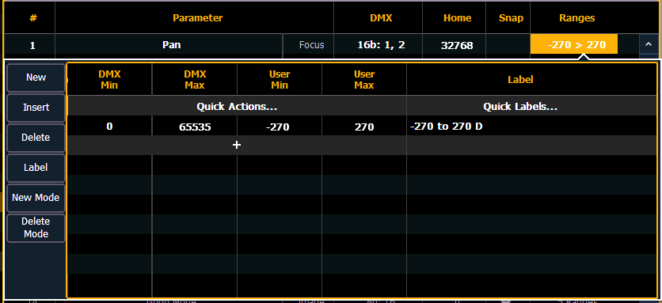
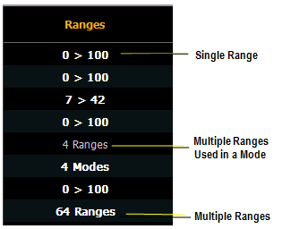

Range editing a parameter
You can enter the operational ranges for specific slots within any specific parameter (such as color scroller, color wheel, gobo wheel, and so on). You can do this by either defining each range individually or you can use the quick action tools to define multiple ranges at once.

If a parameter has only one range, the values for that range will display in the range column. If that parameter has multiple ranges, the number of ranges will be displayed. If a range is used in a mode, the range will not be in bold.

For example, if the parameter were “Gobo Wheel”, and the fixture included a four-slot gobo wheel, you can use ranges to determine the minimum/ maximum values for each of those slots. You can also label the slots and define the minimum/ maximum values that will appear in the channel display for that parameter.
To define the range values individually for any parameter:
- Use the [Page] keys to navigate to the parameter that you want to add ranges to.
- Click on the range. The range window will open.
- Determine the total number of slots required by the parameter. Be sure to include “open” slots when needed.
- Press {New} or {+}to add ranges. Repeat this step until you have as many slots as are required by the number determined in step 3.
- Use the [Page] keys to select the range and field you wish to edit. Fields are:
- DMX Min - enter the minimum value (0 through 255) for the range slot you are defining.
- DMX Max - enter the maximum value (0 through 255) for the range slot.
- User Min - enter the value that will be displayed to users (for example, what will be displayed in the live summary view) when the slot is at its minimum value. Value can range from -32767 to 65535.
- User Max - enter the value that will be displayed to users when the slot is at its maximum value. Value can range from -32767 to 65535.
- Press {Label} to add a label to any range slots. These will appear in the encoder display and ML controls when the related parameter is displayed for the new fixture.
- Press {Patch} when you have finished editing the ranges.
To delete a range value, select it and press {Delete}.